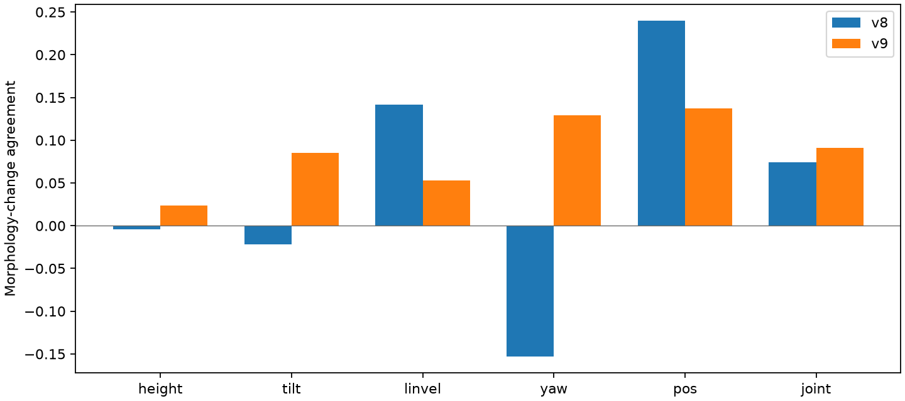
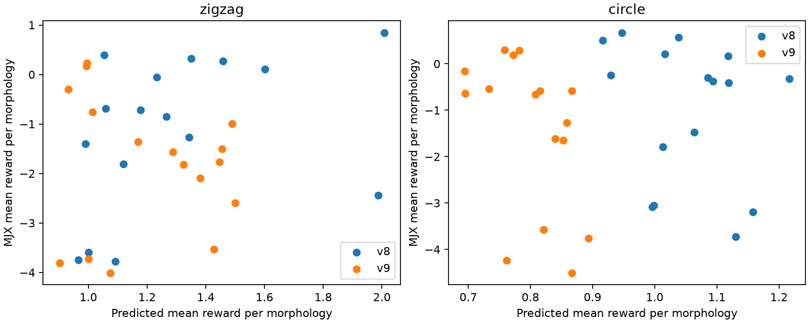
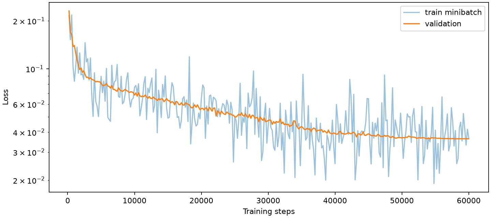

2026년 11월 1일 · v8 대비 학습 형상 추가 · 재계획 없는 MJX 검증
미학습 형상에서의 움직임 일치도 개선 기준을 통과하지 못했다. 실제 MJX Co-Design Gate도 두 Task 모두 미달이며, 4초 공동 생성 생존은 지그재그 8/16, 원형 4/16이다. 정해둔 핵심 지표는 높이·기울기·이동 속도의 움직임 일치도가 각각 v8보다 0.1 이상 높아지는지다. 형상 수 확대만으로 문제가 해결됐다고 판단하지 않는다. 아래 MJX 판정은 별도 기준으로 제시한다.
기존 16개 형상에 새 학습 형상 32개를 더한 TT를 60,000스텝 학습했다. 배치 32, 50Hz 제어의 길이 32 window, Mode 2·4, 형상 전 층 주입(FiLM)을 유지했다. 새 시험 형상 8개는 학습에서 제외했다. 학습 완료와 별도로 실제 물리 기록을 대상으로 평가했다.
v8·v9에는 같은 물리 사례 516쌍, 같은 seed 8개, 같은 오차 단위(v8 정규화 기준)를 사용했다. 두 형상에 적용된 행동이 동일한지도 검사했다. 같은 행동 원본에서 형상쌍을 반복 뽑았으므로 모든 쌍이 독립 표본인 것은 아니다. 주 판정은 시작 프레임 30이며, 정적인 형상 차이와 시간에 따른 움직임을 분리했다. 잘못된 E를 넣을 때의 추가 오차가 커지는지도 함께 기록했다.
일치도는 실제 형상 변화와 예측 형상 변화의 상관이다. 1에 가까울수록 좋고, 0은 일치가 약함을 뜻한다. 잘못된 E 벌점은 잘못된 E의 움직임 RMSE에서 올바른 E의 RMSE를 뺀 값이다.
| 항목 | v8 일치도 | v9 일치도 | 변화 | v8 E 벌점 | v9 E 벌점 |
|---|---|---|---|---|---|
| 높이 | -0.005 | 0.023 | +0.028 | 0.0005 | 0.0006 |
| 기울기 | -0.022 | 0.085 | +0.108 | 0.0005 | 0.0015 |
| 이동 속도 | 0.142 | 0.053 | -0.089 | 0.0009 | 0.0002 |
| 방향 | -0.153 | 0.129 | +0.282 | -0.0024 | 0.0014 |
| 몸통 위치 | 0.240 | 0.137 | -0.102 | 0.0033 | 0.0012 |
| 관절각 | 0.074 | 0.091 | +0.017 | 0.0008 | 0.0008 |

기존 16개 형상에서 형상당 후보 4개를 실제 MJX로 실행하고, 공동 생성 후보 16개도 실행했다. 통과 기준은 예측 보상의 형상 효과 p<0.05, 형상 평균 보상의 예측·실제 순위 상관>0.6, 2초 무 guidance 경로 오차 중앙값<15cm다. 4초 실행 결과이며 최종 10초 성공을 뜻하지 않는다. 경로 차이는 유효 실행 구간에서 계산하므로 조기 낙상과 생존 수를 함께 본다.
| 모델·Task | 예측 형상 효과 p | 보상 순위 상관 | 2초 경로 차(cm) | 2초 생존 | Gate | 4초 생존 | 실제 보상 중앙값 | 실제 진행(m) |
|---|---|---|---|---|---|---|---|---|
| v8 · zigzag | 0.1433 | 0.491 | 12.2 | 13/16 | 미달 | 9/16 | -1.628 | -0.268 |
| v9 · zigzag | 0.9564 | -0.176 | 18.2 | 14/16 | 미달 | 8/16 | -1.464 | 0.278 |
| v8 · circle | 0.9640 | -0.394 | 12.2 | 13/16 | 미달 | 12/16 | -0.906 | -0.008 |
| v9 · circle | 0.9099 | -0.597 | 18.2 | 14/16 | 미달 | 4/16 | -1.411 | 0.048 |

최종 검증 loss 0.03640. 마지막 학습률은 0으로 내려가므로 말미 loss 안정만으로 충분한 수렴을 선언하지 않는다. 최종 성능 판정에는 위의 외부 평가를 사용한다. 평가 중 시스템 GPU 사용 최대 2.16GiB, RAM 여유 최소 13.26GiB였다. CPU 2코어, PyTorch GPU 할당 25%, JAX 풀 비율 40%로 제한하고 단계를 순차 실행했다.

공동 생성한 형상과 행동을 실제 MJX에서 실행한 기록이다. 흰 점은 Task 경계, 파란 점은 TT 예측 경로이며 로봇은 실제 MJX 기록이다. 각 후보의 절대 경로 영상을 제공한다.
이번에는 형상 수와 데이터 양이 함께 늘었고 학습 스텝은 같았다. 따라서 형상 범위만의 효과나 학습량 부족을 각각 확정할 수는 없다. 형상별 초기 상태 차이까지 완전히 제거한 인과 실험은 아니며, 새로운 모든 행동이나 10초 복합 Task의 성공을 보장하지 않는다. 판정 미달이라면 형상 수나 학습 시간만 계속 늘리기보다 E·행동 조건을 실제 상태 변화와 연결하는 학습 목표와 데이터 구성을 먼저 점검해야 한다.
종합 수치 · 미학습 형상 원자료 · 학습 형상 원자료 · 실행 상태